Đội agent phát triển phần mềm
Quy trình cho một nhóm coding agent làm việc trong Orca. Bạn là Product Owner (PO) và chỉ duyệt ở các cổng cố định. Orchestrator chia việc cho các role, kết quả cuối là draft PR hoặc một branch đã commit. Merge, release và deploy do người làm, ngoài quy trình này.
Ai giao việc cho ai

- PO giao việc cho Orchestrator (một coding agent bất kỳ trong terminal Orca). Orchestrator giao việc cho mọi role còn lại.
- Ý tưởng sản phẩm: thảo luận với Researcher. Thiết kế kỹ thuật: thảo luận với Solution Architect. Hai phiên này không chat trực tiếp với Orchestrator.
- Chi tiết từng role ở trang Vai trò.
Các cổng PO duyệt
| Cổng | PO duyệt gì | Khi nào |
|---|---|---|
Gate 1 | Business spec: user story, quy tắc nghiệp vụ đổi hành vi | Có quy tắc nghiệp vụ mới hoặc đổi (S2, S3) |
G-UI | Chọn 1 trong 2 hoặc 3 phương án mockup | Màn hình hoặc luồng mới, khi ui_rules.gate là on. Tắt thì Orchestrator tự chọn |
Gate 2 | Bản bàn giao: draft PR hoặc branch, rủi ro merge nêu trước | Cuối mọi Run (S1 đến S3) |
G-Reply G-Scope G-PR | Trả lời client, phạm vi và ước lượng, PR sửa lỗi | Chỉ trong chế độ ticket, xem Bảo trì |
Không có cổng nào được tự đóng. PO vắng thì Orchestrator chọn phương án không đổi gì ngoài repo và báo lại, cổng vẫn mở.
Nguyên tắc
- Phiên tách biệt: PO giao việc cho Orchestrator; thảo luận sản phẩm với Researcher, kỹ thuật với Solution Architect. Ghi chú của Researcher nằm ở
.team/research/vàtodo.md. - Orca theo dõi, code là sự thật: không có bảng markdown; trạng thái, người nhận, phụ thuộc và cổng nằm trong Orca. Hệ thống chạy thế nào thì hỏi code và test; business muốn gì thì hỏi business spec.
- Quy trình ở đây, chi tiết dự án ở config: stack, lệnh, branch nằm trong
.team/config.yaml. - Bằng chứng, không phải lời nói: "xong" nghĩa là có output lệnh, lần chạy test, ảnh chụp hoặc URL trong báo cáo.
Phiên thảo luận và chuyển phiên
- Researcher ghi
.team/research/<topic>.mdrồi đề xuất mục chotodo.md; chỉ sửatodo.mdsau khi PO đồng ý. - Solution Architect mở draft PR trên branch
docs/architecture-<topic>và cập nhật mô tả PR khi thảo luận tiến triển. - Orchestrator ghi
.team/<feature>/handoff.mdsau Gate 1, hoặc khi context đầy khoảng một nửa, rồi bảo PO mở phiên mới. Phiên mới chỉ đọchandoff.mdvà trạng thái Orca.
Tài liệu: agent đọc gì, người đọc gì
Chi tiết ở trang Tài liệu.
Tier mô hình
Mỗi role chạy ở một tier. Orchestrator chọn agent cho từng Task theo tier, quota và ràng buộc (Reviewer và Builder luôn khác agent).
| Tier | claude | codex | Effort | Role chạy ở tier này |
|---|---|---|---|---|
| top | opus | gpt-6-astra | high | Tech Lead (spec và plan S2/S3), Builder S3, Code Reviewer, Security, Solution Architect (arch-review) |
| work | sonnet | gpt-6.1-sol | medium | Tech Lead (cập nhật spec), Designer, Builder S1 và S2, QA, Perf/A11y, Investigator, Ticket Analyst |
| fast | haiku | gpt-6-luna | low | Builder S0, Anti-AI Editor chạy riêng, Delivery Engineer |
cursor và copilot chỉ nhận Task đánh dấu simple, ở tier fast. Bật tắt từng agent bằng models.agents, xem Cấu hình.
Vị trí file
- Team root
$AGENT_TEAM_HOME: thư mục chứaworkflow.md(mặc định~/.agents/teams). - Skill dùng chung
$AGENT_SKILLS_DIR(mặc định~/.agents/skills). - Thư mục scratch
$AGENT_TEAM_SCRATCH(mặc định: thư mục tạm của hệ thống): tmux session và quota probe. - Tham chiếu của Orchestrator:
skills/orchestrator/references/.
Nguồn: workflow.md, skills/orchestrator/references/coding-agents.md, skills/orchestrator/references/review.md, docs-policy.md.